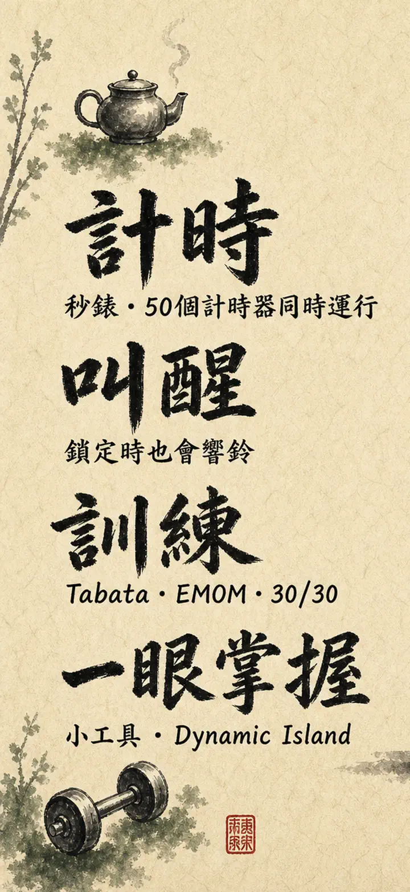
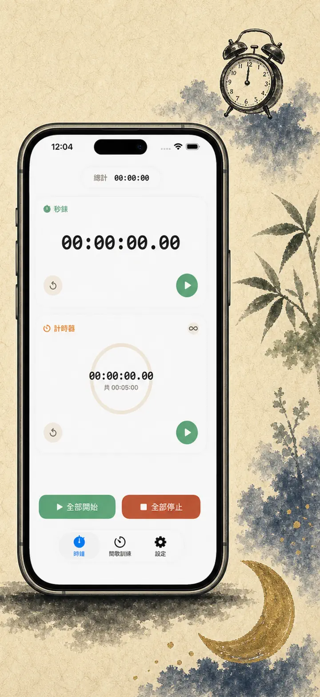
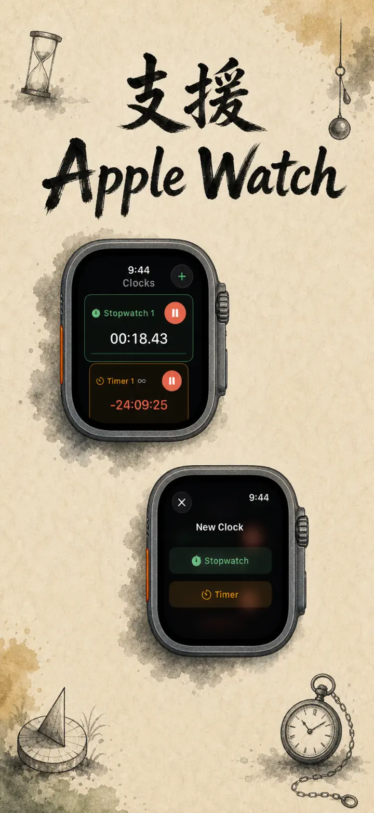
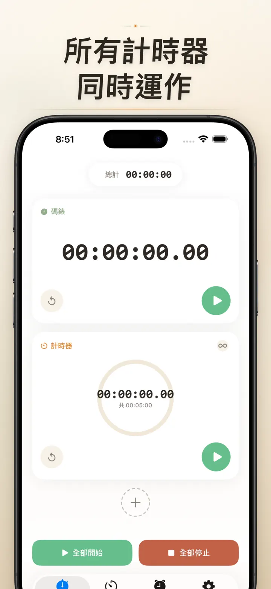
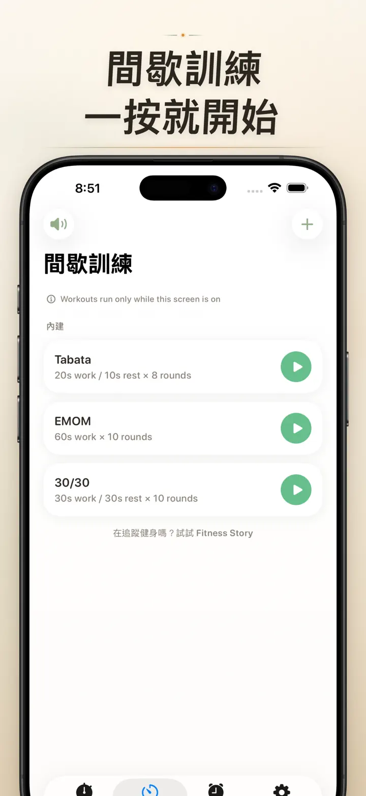
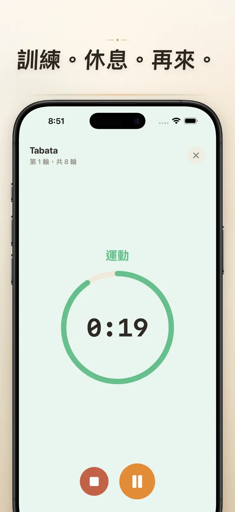
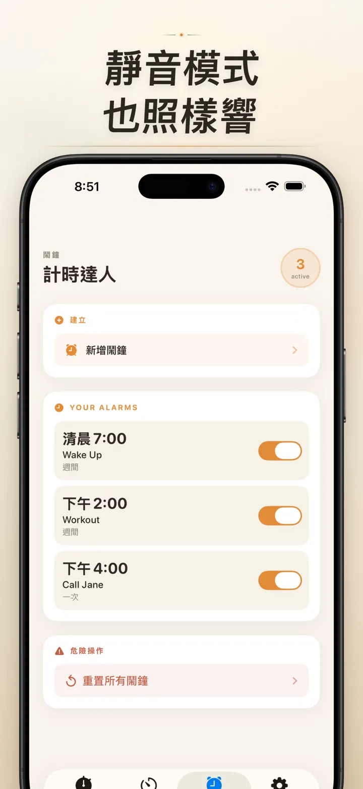

Timer on Me
計時器、鬧鐘、碼表、HIIT
全新日期鬧鐘：為任意未來日期和時間設定一次性提醒，支援定期鬧鐘、50個計時器同時運行、HIIT與Tabata訓練及Apple Watch。
從 App Store 下載
關於此 App
計時達人是你在 iPhone、iPad、Apple Watch 上的多工計時器與碼表。最多同時跑 50 個計時器，HIIT、Tabata、番茄鐘都能精準掌握，而且鈴聲一定響 — 就算手機鎖定、App 被關掉也不會漏。
鬧鐘
- 起床鬧鐘與提醒鬧鐘，可自訂標籤與每週排程
- 由 AlarmKit 驅動 — 手機鎖定、計時達人關掉都照樣響
- 可選貪睡提醒（3 / 5 / 9 / 15 / 30 分鐘）或關閉貪睡
- 內建鈴聲任你挑，也可匯入自己的音樂
- 專屬鬧鐘分頁，一鍵啟用或關閉
間歇訓練與運動
- 內建 Tabata、EMOM、30/30 三種預設，兩下就能開始訓練
- 自訂間歇編輯器：工作、休息、回合數的分鐘與秒數自由設定
- 全螢幕訓練模式，階段顏色提示，可一鍵靜音
- 訓練中途可暫停、跳過、重新開始，進度不會丟
Apple Watch
- 完整原生 watchOS App，不是只有同步顯示的外殼
- 手腕上同時跑多個碼表與計時器
- 碼表精準到百分之一秒
- 專屬錶面複雜功能，一點就開
- 手機不在身邊也能獨立運作
50 個計時器同時跑
- 一個畫面最多跑 50 個計時器與碼表
- 單獨啟動或群組同步開始、停止、重設
- 自動循環，回合訓練超順手
- 歸零後繼續跑，加時自動計
- 進度條顏色提示：50% 轉黃、10% 轉紅
- 拖曳排序、自訂名稱
可靠的鈴聲與提醒
- AlarmKit：手機鎖定、App 關掉，鈴聲照樣響
- 動態島與即時動態，鎖定畫面也能看進度
- 主畫面小工具：小、中、大三種尺寸
- 多款內建鈴聲，包含鐘聲、鳥鳴、經典電話音
- 點一下就能試聽鈴聲
- 長時間使用可開啟「螢幕常亮」
自訂與分享
- 小數、總計、百分比依你的習慣切換顯示
- 儲存與覆蓋常用設定，下次一鍵叫出
- 計時配置可匯出成 CSV、JSON 或純文字
- 分享給同事、學生、教練或隊友
iPhone、iPad、Apple Watch 全適配
- 各種螢幕尺寸自動調整
- iPad 支援 Split View 分割畫面
- 支援 34 種語言
適合使用情境
- 番茄鐘讀書、考試衝刺、專注工作
- HIIT、Tabata、CrossFit、重訓循環
- 拳擊、格鬥、跆拳道回合計時
- 手沖咖啡、泡麵、煮火鍋、料理計時
- 瑜伽、皮拉提斯、冥想、呼吸練習
- 課堂活動與團體計時
- 樂器練習、簡報演講
- 桌遊、派對遊戲
立即下載計時達人，把每一分每一秒都握在手裡 — 健身房、辦公室、家裡都順手。
隱私權政策：https://masawata.net/privacy-policy.html 服務條款：https://www.apple.com/legal/internet-services/itunes/dev/stdeula/
螢幕快照






Timer on Me
全新日期鬧鐘：為任意未來日期和時間設定一次性提醒，支援定期鬧鐘、50個計時器同時運行、HIIT與Tabata訓練及Apple Watch。
從 App Store 下載